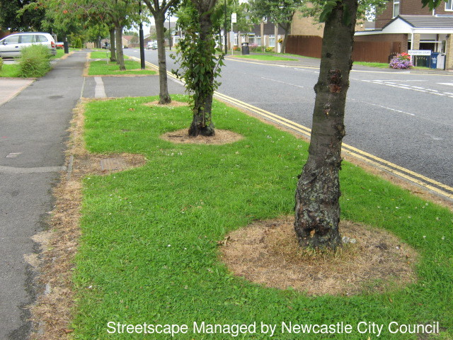

Pesticide-Free Newcastle
Petition
PFN is campaigning for Newcastle City Council to stop spraying glyphosate herbicides on our public green spaces.
Please sign our petition to Newcastle City Council, and forward the link to any others you think might be interested in signing it too.
